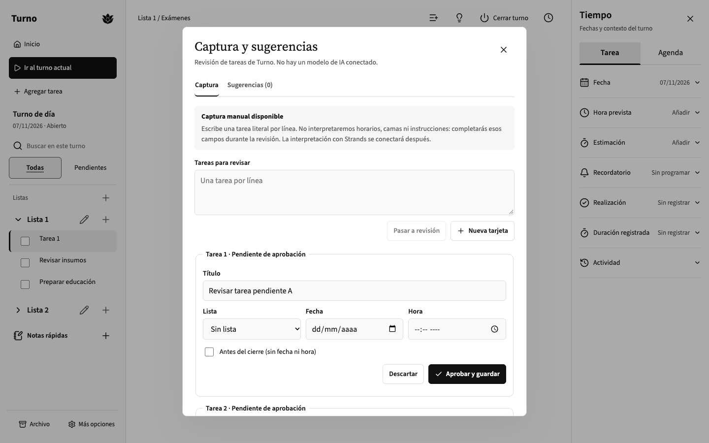

Tareas y listas
Registra pendientes, agrúpalos y vuelve a encontrarlos sin depender de una conversación con un asistente.
TURNO · EN DESARROLLO
Turno es un proyecto independiente para organizar tareas, horarios y notas durante una jornada de trabajo. Busca reducir el esfuerzo de mantener todo en la cabeza, sin transformar la aplicación en un chat.
Esta página presenta un prototipo experimental. No existe una versión pública con cuentas, datos reales o inferencia de IA habilitada.
QUÉ ES
Turno reúne compromisos cotidianos en una estructura visible y sencilla. Una persona puede organizar tareas por listas, consultar fechas y pendientes, escribir notas y revisar lo que falta antes de finalizar su jornada. Su diseño busca que esas acciones sean claras incluso cuando el trabajo cambia constantemente.
Registra pendientes, agrúpalos y vuelve a encontrarlos sin depender de una conversación con un asistente.
Revisa las tareas de una jornada y reconoce compromisos que deben verificarse antes del cierre.
Las propuestas se convierten en tareas solo cuando la persona las revisa y aprueba. La captura actual es manual, sin LLM.
PROTOTIPO REAL · REACT V6
Esta es una captura auténtica del prototipo React v6, generada con tres tareas sintéticas. El recorrido permite crear tarjetas para revisión; actualmente no interpreta lenguaje natural ni se conecta a un modelo. Las tareas permanecen en la demo y requieren confirmación individual.

DIRECCIÓN DE PRODUCTO · AÚN NO DISPONIBLE
Estamos investigando un agente ambiental basado en Strands Agents que pueda proponer recordatorios operativos y destacar información útil desde eventos autorizados. La persona seguiría controlando qué se guarda y qué se descarta; no existiría un chatbot obligatorio.
También evaluamos, sujetos a autorización de OpenAI, que cada usuario elegible pueda conectar su propia cuenta de ChatGPT. Esta función no está disponible, no solicita credenciales y no utiliza la suscripción de terceros. Las pruebas de integración se mantienen limitadas a información sintética.
LÍMITES DEL PRODUCTO
No es una ficha clínica electrónica ni un sustituto de registros institucionales, protocolos, evaluaciones o decisiones asistenciales. No está diseñado para almacenar datos identificables de pacientes, emitir indicaciones terapéuticas ni priorizar riesgos clínicos automáticamente.
La versión de demostración utiliza datos sintéticos en memoria y no cuenta con backend autenticado, colaboración entre usuarios ni persistencia productiva. No ingreses información personal ni clínica real en la demo.
ENGLISH · FOR INTEGRATION REVIEW
Turno is an independent, early-stage personal task and shift organizer for professionals across disciplines. The React prototype demonstrates tasks, notes, scheduling context, and human-reviewed task capture using synthetic data. It is not an electronic health record or a clinical decision system, and it has no production user accounts or connected AI provider. We are exploring an optional non-chat Strands Agents feature and would like eligible users to authorize their own ChatGPT plan use, subject to OpenAI partner approval and explicit consent.